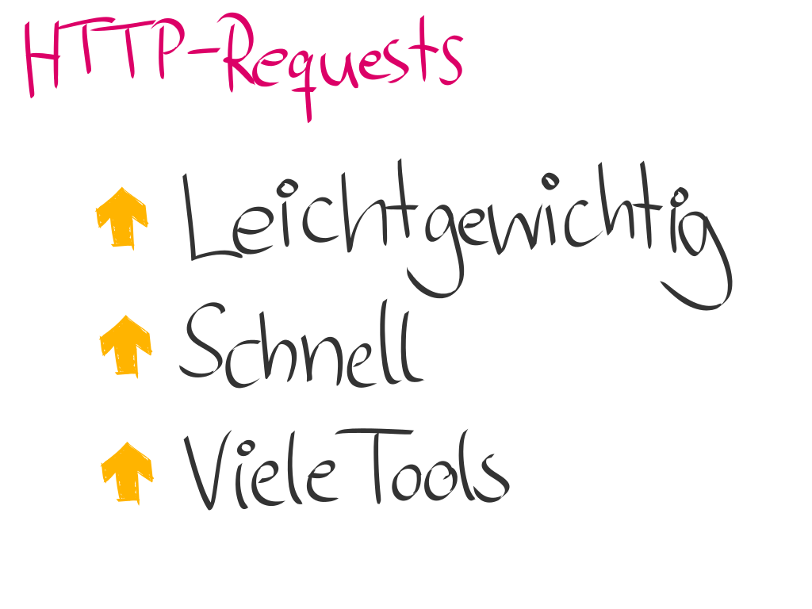

Explicit markup ends without a blank line; unexpected unindent.
Explicit markup ends without a blank line; unexpected unindent.

Explicit markup ends without a blank line; unexpected unindent.


Explicit markup ends without a blank line; unexpected unindent.
Explicit markup ends without a blank line; unexpected unindent.
Explicit markup ends without a blank line; unexpected unindent.
| Space | Forward |
|---|---|
| Left, Down, Page Down | Next slide |
| Right, Up, Page Up | Previous slide |
| P | Open presenter console |
| H | Toggle this help |